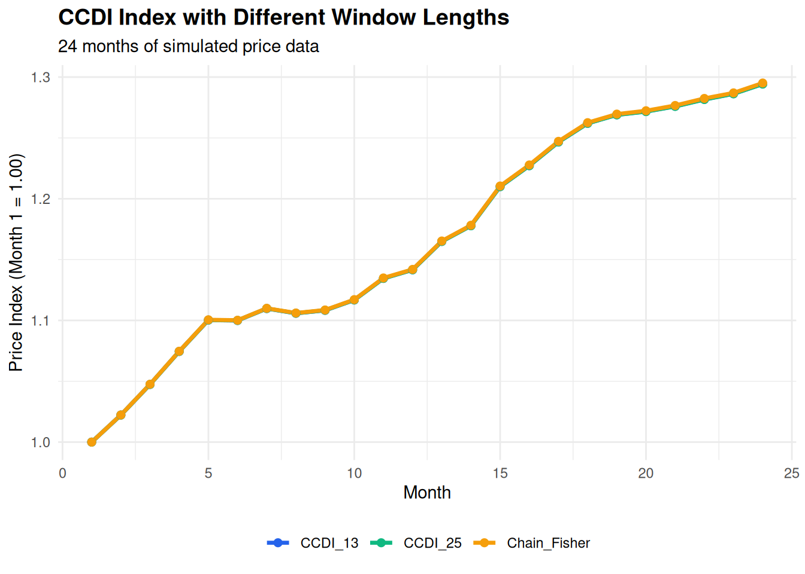

library(tidyverse)
# Generate extended time series
set.seed(456)
n_periods <- 24 # 2 years of monthly data
n_items <- 5
price_data <- matrix(NA, n_items, n_periods)
quantity_data <- matrix(NA, n_items, n_periods)
# Initial values
price_data[, 1] <- c(10, 20, 15, 25, 30)
quantity_data[, 1] <- c(100, 50, 80, 40, 30)
# Simulate realistic price movements
for (t in 2:n_periods) {
# Add seasonal component and trend
trend <- 1.002 # 0.2% monthly trend
seasonal <- 1 + 0.01 * sin(2 * pi * t / 12)
price_data[, t] <- price_data[, t-1] * trend * seasonal *
runif(n_items, 0.99, 1.03)
quantity_data[, t] <- quantity_data[, t-1] *
runif(n_items, 0.98, 1.02)
}
# Fisher bilateral function
fisher_bilateral <- function(p_s, p_t, q_s, q_t) {
laspeyres <- sum(p_t * q_s) / sum(p_s * q_s)
paasche <- sum(p_t * q_t) / sum(p_s * q_t)
return(sqrt(laspeyres * paasche))
}
# GEKS function for a window
geks_window <- function(price_window, quantity_window) {
n_window <- ncol(price_window)
indices <- numeric(n_window)
indices[1] <- 1
for (t in 2:n_window) {
# Calculate GEKS for period t relative to period 1
bilateral_matrix <- matrix(1, n_window, n_window)
for (s in 1:n_window) {
for (j in 1:n_window) {
if (s != j) {
bilateral_matrix[s, j] <- fisher_bilateral(
price_window[, s], price_window[, j],
quantity_window[, s], quantity_window[, j]
)
}
}
}
product <- 1
for (j in 1:n_window) {
product <- product * (bilateral_matrix[1, j] / bilateral_matrix[t, j])
}
indices[t] <- product^(1/n_window)
}
return(indices)
}
# CCDI with rolling windows
ccdi_index <- function(price_data, quantity_data, window_length = 13) {
n_periods <- ncol(price_data)
indices <- numeric(n_periods)
indices[1] <- 1
# First window
window_end <- min(window_length, n_periods)
window_prices <- price_data[, 1:window_end]
window_quantities <- quantity_data[, 1:window_end]
window_indices <- geks_window(window_prices, window_quantities)
indices[1:window_end] <- window_indices
# Roll forward
if (n_periods > window_length) {
for (t in (window_length + 1):n_periods) {
# New window
window_start <- t - window_length + 1
window_end <- t
window_prices <- price_data[, window_start:window_end]
window_quantities <- quantity_data[, window_start:window_end]
window_indices <- geks_window(window_prices, window_quantities)
# Link at overlap period
link_period <- window_length - 1
link_value <- indices[t - 1]
# Movement from link period to current
movement <- window_indices[window_length] / window_indices[link_period]
indices[t] <- link_value * movement
}
}
return(indices)
}
# Calculate CCDI with different window lengths
ccdi_13 <- ccdi_index(price_data, quantity_data, 13)
ccdi_25 <- ccdi_index(price_data, quantity_data, min(25, n_periods))
# Calculate chain Fisher for comparison
chain_fisher <- numeric(n_periods)
chain_fisher[1] <- 1
for (t in 2:n_periods) {
fisher <- fisher_bilateral(
price_data[, t-1], price_data[, t],
quantity_data[, t-1], quantity_data[, t]
)
chain_fisher[t] <- chain_fisher[t-1] * fisher
}
# Create comparison
comparison <- data.frame(
Month = 1:n_periods,
CCDI_13 = ccdi_13,
CCDI_25 = ccdi_25,
Chain_Fisher = chain_fisher
)
# Visualization
comparison_long <- comparison %>%
pivot_longer(cols = -Month, names_to = "Method", values_to = "Index")
ggplot(comparison_long, aes(x = Month, y = Index,
color = Method, group = Method)) +
geom_line(linewidth = 1.2) +
geom_point(size = 2) +
scale_color_manual(values = c(
"CCDI_13" = "#2563eb",
"CCDI_25" = "#10b981",
"Chain_Fisher" = "#f59e0b"
)) +
labs(
title = "CCDI Index with Different Window Lengths",
subtitle = "24 months of simulated price data",
y = "Price Index (Month 1 = 1.00)",
x = "Month"
) +
theme_minimal() +
theme(
plot.title = element_text(face = "bold", size = 14),
legend.position = "bottom",
legend.title = element_blank()
)
# Print summary statistics
cat("\nFinal Index Values (Month 24):\n")
Final Index Values (Month 24):cat("CCDI-13:", round(ccdi_13[n_periods], 4), "\n")CCDI-13: 1.2944 cat("CCDI-25:", round(ccdi_25[n_periods], 4), "\n")CCDI-25: 1.2942 cat("Chain Fisher:", round(chain_fisher[n_periods], 4), "\n")Chain Fisher: 1.2951